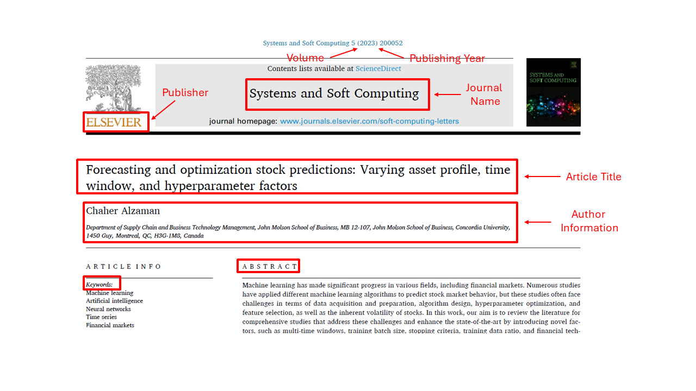
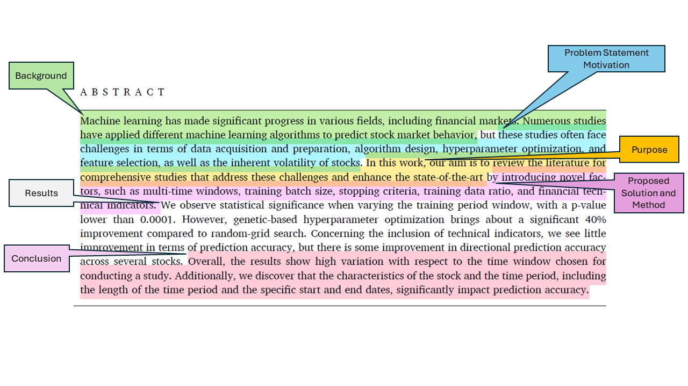
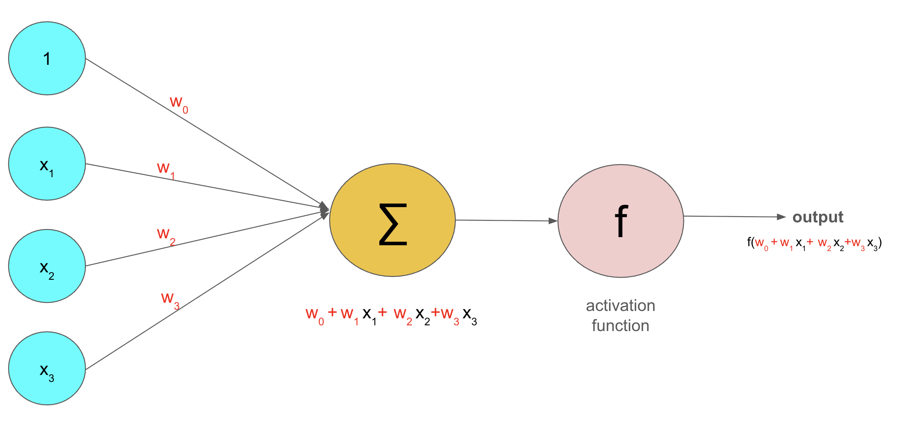
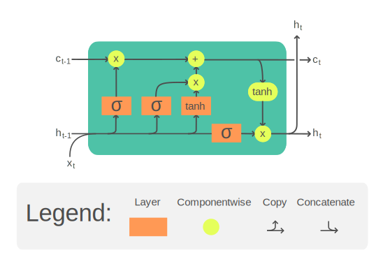

Project-2: Novel Factors#

In this project, we will follow the methodology described in the following article:
In this article different values for multi-time windows, training batch size, stopping criteria, training data ratio, and financial technical indicators are used to increase the performance of machine learning models that are built.
In this section, we will define key concepts and provide explanations of the tools and techniques referenced in the article.
Cover#

General Information About the Article
Title: Forecasting and optimization stock predictions: Varying asset profile, time window, and hyperparameter factors
Author: C. Alzaman
Year of Publication: 2023
Volume: 5
Article Number: 200052
Published In: Systems and Soft Computing, ScienceDirect (Elsevier)
Focus: Improving stock prediction models through enhanced hyperparameter tuning
Abstract#

Background
Machine learning (ML) is a powerful tool used in many fields, including finance. Researchers have been trying to use ML to predict stock market behavior.
Problem (Motivation)
However, predicting the stock market is difficult because:
The data is hard to collect and prepare.
Choosing and designing the right algorithm is complex.
Hyperparameters (the settings of ML models) are tricky to optimize.
It’s not always clear which features (inputs) to include.
Stock prices are naturally volatile and unpredictable.
Purpose
This study reviews existing research and also explores new factors that may improve stock prediction models.
Method (Proposed Solution)
The researchers tested several ideas:
Using different time windows (how far back in time the training data goes).
Changing training batch size, stopping criteria, and training data ratio.
Adding financial technical indicators (like moving averages).
Applying genetic algorithms for hyperparameter optimization instead of traditional random-grid search.
Results
Changing the training time window made a big difference, with statistically significant results (p < 0.0001).
Using genetic-based hyperparameter optimization improved performance by about 40% compared to random-grid search.
Adding technical indicators did not improve prediction accuracy much, but it slightly improved the ability to predict the direction (up or down) of stock movements for some stocks.
The time window and the characteristics of the stock (such as which stock, and which period of time is studied) greatly affected the results.
Conclusion
The study shows that the way data is prepared, especially the time window chosen, has a major impact on stock market prediction. While some methods, like genetic optimization, significantly improve accuracy, others (like technical indicators) have only limited benefits. Predicting stock prices remains challenging because results vary a lot depending on the stock and time period.
Table of Contents#
Introduction
Literature review
Methods
3.1. Background on LSTM
3.2. Background on genetic algorithm
3.3. Background on technical indicators
Results
4.1. Random-Grid search
4.2. Technical parameters
4.3. Genetic hyperparameter optimization
4.4. Genetic algorithm and technical indicators
4.5. Discussion
Conclusion
Introduction#
Stock Prediction – Two Main Approaches
Fundamental Analysis
Focuses on a company’s overall economic health.
Looks at things like past performance, assets, and earnings.
Does not focus directly on the stock price itself.
Technical Analysis
Focuses on past stock price patterns and charts.
The idea is that patterns in past movements may help predict future prices.
Theories About Stock Prices
Efficient Market Hypothesis (EMH)
Says it is impossible to predict stock prices because all available information is already reflected in the current price.
Random Walk Hypothesis (RWH)
Suggests stock prices move randomly.
A stock’s future price depends only on new (future) information, not on past prices.
Counterarguments from Research
Some studies (e.g., Chen et al., Basak et al.) argue that parts of stock behavior may actually be predictable.
Liu and Yeh showed that the relationship between stock weights and portfolio performance is nonlinear (not a straight-line/simple relationship).
Role of Neural Networks
Because stock data often show nonlinear patterns,
Neural networks can be helpful tools for modeling and predicting stock movements.
Artificial Intelligence (AI) and Machine Learning (ML)
Machine Learning (ML): A branch of Artificial Intelligence.
Goal of ML: Train machines on data –> help them learn patterns –> produce reliable predictions or outputs.
How ML works: Uses algorithms and statistical models.
Deep Learning (DL)
A subset of ML designed for more complex problems (like big data).
Uses Artificial Neural Networks (ANNs) to mimic how the human brain processes information.

LSTM (Long Short-Term Memory)
A special type of Recurrent Neural Network (RNN).
Works well with sequential data (data that comes in order, step by step).
Stock prices are collected over time (daily, hourly, etc.), which makes them a time series.
Why LSTM is useful: It can capture patterns in sequences, making it highly applicable to stock price prediction.

What is Hyperparameter Optimization?
Hyperparameters = settings chosen before training a machine learning model.
Examples of hyperparameters:
Number of neurons in a layer
Number of hidden layers
Batch size (how much data is processed at once)
Learning rate (how fast the model learns)
Hyperparameter optimization = the process of finding the best values for these settings so the model performs well.
Methods Compared
Random Grid Search
Tries different hyperparameter combinations randomly from a set of possibilities.
Can be inefficient.
Genetic Search Algorithm
Inspired by biological evolution (selection, mutation, etc.).
Iteratively improves hyperparameters.
Found to be better than random grid search in this work.
Key Findings
The genetic search algorithm produced superior results compared to random grid search.
The choice of time period (the window of data used for training) has a strong effect on how well the model can learn and predict stock behavior.
Remark: The last paragraph of the introduction provides a section-by-section summary of the entire paper.
Literature Review#
Performance of Different Machine Learning Techniques in Stock Prediction
Technique / Method |
Authors |
Key Result / Contribution |
|---|---|---|
XGBoost |
Chen & Guestrin [7] |
Low computational cost, strong performance; combines loss function with penalty to reduce variance. |
LSTM Models |
Mehtab et al. [8] |
Proposed 4 LSTM models (3 univariate, 1 multivariate) for stock prediction. |
Neural Networks |
Liu & Yeh [6] |
Identified patterns and relationships in stock market assets. |
LSTM + Paragraph Vector (Hybrid) |
Akita et al. [9] |
Combined numerical (LSTM) and textual (Paragraph Vector) data for predictions. |
LSTM with Strategies |
Nelson et al. [10] |
Predicted stock movements and suggested buying strategies. |
SVM + Reinforcement Learning |
Shen et al. [11] |
Achieved ~75% accuracy using features from global stock indices + individual stocks. |
Effective Transfer Entropy + ML Models |
Kim et al. [12] |
Best results with ANN and LSTM when integrating Effective Transfer Entropy. |
Comparison of Machine Learning Techniques for Stock Prediction
Authors |
Techniques Compared |
Key Findings |
|---|---|---|
Patel et al. [13] |
Naive Bayes + indicator analysis |
Conducted thorough indicator analysis; compared multiple techniques for stock prediction. |
Ismail et al. [14] |
Logistic Regression, ANN, SVM, Random Forest |
Used daily log returns + persistent homology; included features like SMA, WMA, momentum, stochastic, MACD10. Found prediction accuracy ranging 47.41% – 64.29% (ANN: 52.73% – 63.27%). |
Kumar et al. [15] |
Various ML models |
Found Random Forest superior among compared methods. |
Vijh et al. [16] |
Random Forest, Neural Networks |
Found both Random Forest and Neural Networks to be adequate for stock prediction. |
Portfolio Selection with Machine Learning in Stock Prediction
Authors |
Techniques Used |
Key Findings |
|---|---|---|
Chen et al. [4] |
Hybrid model: XGBoost + Firefly Algorithm + Monte Carlo |
Predicted stock prices and used Monte Carlo to allocate capital based on portfolio return/variance. |
Paiva et al. [17] |
Fusion of SVM + Mean Variance (multi-objective optimization) |
Showed significant gains compared to a random model in predicting financial stock performance. |
Contributions of This Work
Review of Multiple Stocks. Unlike most literature that focuses on single stocks or portfolio trading, this work reviews multiple assets.
Notes that multi-asset studies are less common in stock prediction compared to cryptocurrency studies.
Context from Literature
Shahriari et al. [23]: Used ordinal partition networks to study variations in 10 cryptocurrencies (e.g., Bitcoin, Binance Coin, XRP).
Sigaki et al. [24]: Focused on market efficiency theory.
This work differs by focusing on technical hyperparameters.
Focus on Hyperparameters
Table 1 summarizes recent research in machine learning for stock prediction, including important factors integrated into prior works.
Points out gaps
Little attention given to the effect of time period (size, start and end dates) on model learning and prediction.
Training ratio sensitivity rarely discussed.
Feature selection and analysis largely absent.
Technical Contributions in This Work
Introduce technical indicators into the model.
Test performance with and without these indicators.
Perform feature selection using grid search.
Eliminate features that are not significant.